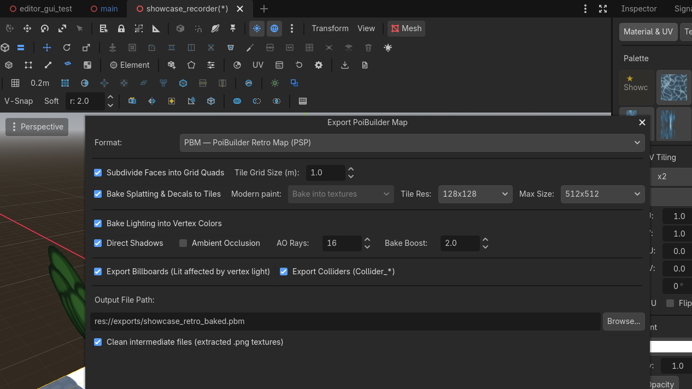

Export & retro
PBM is the headline product — a quick export bakes a tile-baked .pbm with vertex light for the PSP. GLB (retro-baked or modern) is one dialog away. Retro textures are sanitized on the way out.
Toolbar  Export...
Export...
 Row 2 · Export
Row 2 · Export Export...Opens the export dialog: PBM (the retro .pbm map, default) or GLB — modern bake (lightmap-ready) or retro baked (vertex-lit) — with the bake options.Needs: Nothing (always enabled) opens the dialog: Format defaults to PBM (
Export...Opens the export dialog: PBM (the retro .pbm map, default) or GLB — modern bake (lightmap-ready) or retro baked (vertex-lit) — with the bake options.Needs: Nothing (always enabled) opens the dialog: Format defaults to PBM (res://exports/exported_map.pbm), with two GLB flavors below it — the Modern Bake first, the Retro Baked Map second. Everything else on the page applies per format.
For the whole journey on one map, see the walkthroughs: build → export → play, once per pipeline.
The PoiBuilder scene as-is is the authoring format — the live splat shader and decal layers carry a significant performance cost (~4× the retro bake's frame time on the benchmark baseline). It is highly recommended to export and play the baked map (GLB for the modern pipeline, PBM for retro); keep the editable scene for building, testing and iterating.
Modern GLB (baked)
The format to play and ship on the modern pipeline — selecting it in the dialog defaults to the optimized bake: paint baked into textures, no vertex lighting. Authored geometry is kept; collision meshes are named Collider_*; lights are exported as lights, so your realtime lights or a LightmapGI bake stay in charge. Paint has its own switch, Modern paint:
Two authored looks glTF cannot carry come along as data on the nodes, and a Godot consumer restores them with a few lines (the frame benchmark does exactly this): shadow flags — a shadow-casting light tags its glTF node with poi_shadow extras, since KHR_lights_punctual has no shadow field — and the environment preset name, stamped on the scene root as poi_env_preset.
The display environment a consumer applies depends on the flavor, and the difference matters:
- Retro bake — the map is fully baked: every lumen already lives in the vertex colors and tile textures. The consumer adds NO lighting of any kind; it shows the preset's sky and linear fog and nothing else —
PBEnvironment.apply_retro_display(root, preset), which mirrors the PSP renderer exactly. Applying the live preset on top double-lights the map (measured +54% mean luminance at day vs the device) and a filmic tonemap re-decides colors the bake already decided. - Modern bake — the map keeps live materials and realtime lights (with shadows restored from
poi_shadow), so the full authored environment comes back viaPBEnvironment.apply_preset(root, preset): the same sky, ambient and filmic tonemap the editor showed.
A bare imported GLB with neither step renders with engine defaults and reads wrong.
- Bake into textures (default) — every painted face is composited into its own texture at the same texel density the editor used (256 texels/m), and its UV1 is rewritten into that texture. Self-contained: Godot, Blender, any glTF consumer shows your paint.
- Include splat data — the geometry keeps its mask coordinates (
TEXCOORD_2), each painted face's material carries apoi_splatrecord in its glTFextras, and the masks, layer textures and decal channel ship as PNGs next to the.glbunder<map>.splat/. Use this when the consumer should re-blend at runtime. The recipe (with a reference shader) is indocs/modern_glb_splat.md;PBSplatImport.rebuild_from_extras()restores live, editable paint after a round trip into Godot.
Retro baked map
The path the PSP eats — and what PBM is: the same bake written straight to the binary map instead of a GLB waypoint.
What the export does:
- Subdivides faces to the texture tiling grid (optional).
- Bakes direct light, shadows, AO into vertex colours.
- Bakes splat paint and the decal layer into unique tile textures; unpainted tiles reuse the base.
- Writes collision hulls.
- Writes lights, billboards, particle emitters, walkable meshes, environment preset.
Output: .glb as transport, and/or .pbm (the binary map). Both land in project/exports/ (gitignored). The retro GLB still transports the light nodes (handy for dynamic objects), but the baked surfaces are vertex-lit — the reference viewer hides the imported lights to avoid double-lighting, and so should a viewer meant to reproduce the bake.

Scrolling textures
A scrolling texture is a property of the material: the Material dock writes a speed (in texture repeats per second, per UV axis, signed — negative V falls down a wall) onto the material, and the editor viewport animates it live. The exports carry the speed, not the animation — whichever consumer wants motion applies the one-line recipe uv(t) = uv(0) + t · speed:
- PBM — each mesh's header stores
uv_scroll_u/uv_scroll_v(format §5.1), and the bake exempts scrolling faces from the tile atlas so the face keeps a texture that can slide. For a proven implementation, read the reference PSP engine —retro_engine/psp/psp_render.capplies the offset per moving mesh on the device — or the Godot viewer, which replays it the same way. - GLB (either flavor) — the speed rides the material's glTF
extrasas"poi_uv_scroll": [u, v](repeats per second), in both the retro and modern bakes. A consumer that wants the falls to fall reads that record and offsets the material's UVs over time; without those few lines the GLB shows the water at rest — which is exactly what a static glTF viewer will do.
Do not splat-paint a scrolling face. Paint bakes to a static tile; keep painted and scrolling surfaces on separate faces.
Texture sanitization
Retro consumers — the PSP especially — want power-of-two dimensions at or below max texture size (default 512). The export enforces that on every albedo, including:
PBMeshtiles- Ordinary MeshInstance3D props you did not Poibuilderize
- Particle atlases
A 300×180 import becomes a POT image ≤ 512. A 2048 atlas is downsized. Soft-alpha (blend) travels as RGBA8888; everything else prefers RGBA5551.
The dialog's "max texture size" dropdown is that clamp. Leave it at 512 unless you have measured a reason not to.
Environment
The Env menu (Dawn / Day / Dusk / Night) relights the scene. Export stores the preset name. The PSP app can override it at runtime.


The retro demo engine is a proof of concept
The PSP engine in this repository (retro_engine/psp/) exists to answer two questions: does the .pbm format hold up, and how fast is a real retro target running it? That is all it tries to be — a proof of concept and a performance sanity check, not a game engine you ship with. It has no gameplay, no scripting, no toolchain polish, and it never will.
The contract is the file format, not the demo:
- The
.pbmbinary layout is fully specified in The PBM format specification — write your own loader against it in your engine of choice. - The demo engine in the repo is a reference implementation: read its loader (
retro_engine/psp/pbm_loader.c) and renderer to see how the format is meant to be consumed, then take what you need. - To eyeball the bake in Godot, reference the repository's viewer script (
run_viewer.sh) or roll your own: it renders the same bake (baked / vertex colour / textures / wireframe / colliders + play mode).
Authoring for the retro target
Architecture constraints, performance measurements, and the .pbm byte layout are documented on GitHub:
- Retro Authoring Guide — Godot authoring recipes and export baking rules.
- PSP Optimization Guide — hardware architecture, fill rates, and the 19x texture cache cliff.
- Retro Demo Engine — the reference C renderer and viewer described above.
A scrolling material must not be atlas-packed; export already exempts it.
PPSSPP is for "does it look right". Because host GPUs have massive caches, the emulator hides the PSP's ~8 KB texture cache cliff (a 19x drop from 480 Mfrag/s to 25 Mfrag/s on misses). Do not tune performance from the emulator.